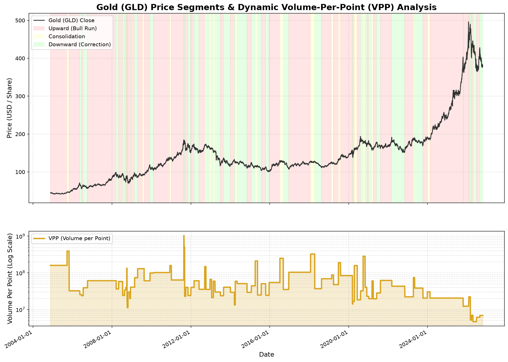

量價效率分析 (VPP)
盤整區高籌碼吸能
盤整段 VPP (1.58億股/點) 為趨勢期約 2.6 倍，代表強烈籌碼換手累積。
波動對稱預估
下跌修正波段中
累計修正 -11.30% (已持續 37 天)，短線 3% 領先燈號出現止跌訊號 (+1.70%)。
反彈低點與建倉策略
深幅修正區 (超跌帶)
跌破歷史中位數 (387.53)，接近左側分批建倉區域，極端防守點 333.34。
完整模型量化分析摘要
最新執行數據
【GLD】【GLD】黃金量價效率與波動對稱動能模型報告
================================================================================
【1. 量價效率分析 (Volume-Per-Point, VPP)】
* 上漲波段: 平均移動 1 點需消耗 56,856,122 股之成交量
* 下跌波段: 平均移動 1 點需消耗 61,188,692 股之成交量
* 盤整波段: 平均移動 1 點需消耗 157,912,081 股之成交量
* 💡 學術結論：黃金盤整期 VPP 為趨勢期之數倍，籌碼高密集蓄能！
--------------------------------------------------------------------------------
【2. 波動等幅對稱與統計 (上漲趨勢波段)】
* 歷史波段數: 39 次
* 平均幅度: 18.05% (中位數: 13.06%)
* 最大幅度: -0.22% | 最小幅度: 103.19%
* 平均持續天數: 89.5 天 (中位數: 52 天)
--------------------------------------------------------------------------------
【2. 波動等幅對稱與統計 (下跌修正波段)】
* 歷史波段數: 37 次
* 平均幅度: -9.89% (中位數: -9.47%)
* 最大幅度: -22.13% | 最小幅度: 2.10%
* 平均持續天數: 42.3 天 (中位數: 38 天)
--------------------------------------------------------------------------------
【3. 當前黃金波段評估與反彈低點預測 (雙速動能模型)】
[長線大趨勢 (10% 門檻錨定)]
* 當前波段類型: 下跌
* 波段起始日期: 2026-08-25
* 波段起始價格: 428.07
* 當前價格 (2026-10-20): 377.65
* 目前波段累計漲跌: -11.78%
* 目前已持續交易日: 38 天
[短線動能預警 (3% 領先燈號)]
* 短線波段狀態: 短線止跌上漲
* 短線轉折日期: 2026-10-14 (基準價 373.36)
* 短線累計漲跌: +1.15%
* 短線持續天數: 4 天
>>> 【量價對稱反彈落點投影預估】 <<<
1. 溫和修正式反彈點 (歷史平均 -9.89%): 【385.72】(目前已跌破)
2. 標準型修正反彈點 (歷史中位數 -9.47%): 【387.53】(目前已跌破)
3. 極端恐慌型修正點 (歷史最大修正 -22.13%): 【333.34】
💡 風控與建倉策略建議：
- 當前黃金價格已跌 38 天、累計修正 -11.78%。
- 時間與幅度皆已進入超跌/深幅修正區（超越歷史中位數）。接近或低於歷史中位數關卡為左側建倉分批佈局區域。
================================================================================
數據分析報表已匯出至: /data/data/com.termux/files/home/storage/downloads/gold_momentum_backtest.csv
動能效率分析圖 (含 VPP 曲線) 已儲存至: /data/data/com.termux/files/home/storage/downloads/gold_momentum_analysis.png
最新黃金量價動能分析圖表
最新更新圖檔
